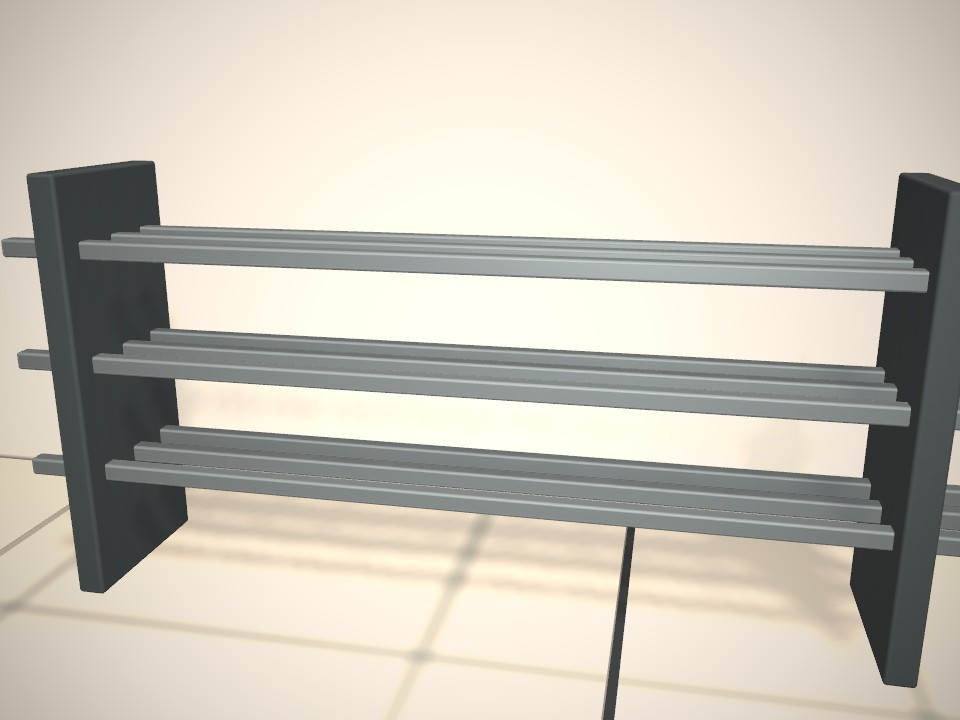

Le point 2026
Métiers manuels :
ce que disent
les chiffres.
Recrutement, apprentissage, savoir-faire : l'état du marché en cinq chiffres clés.
Métallerie
Maçonnerie
Menuiserie
Le marché de l'emploi
2,28
millions de projets
de recrutement
prévus par les employeurs en France pour 2026, tous secteurs confondus.
43,8 %
sont jugés difficiles
par les employeurs eux-mêmes. C'était 50,1 % en 2025.
Source : France Travail, enquête Besoins en main-d'œuvre 2026 (416 588 établissements interrogés fin 2025).
Zoom sur la construction
Dans le BTP,
recruter est encore
plus difficile.
139 510 projets de recrutement prévus dans la construction en 2026.
43,8 %
Tous secteurs
65 %
Construction (BTP)
Source : Observatoire des métiers du BTP, d'après l'enquête BMO 2026 de France Travail. Part des projets de recrutement jugés difficiles.
Métier par métier
Là où recruter est
le plus difficile.
Part des projets de recrutement jugés difficiles en 2026, exemples de métiers manuels.
Usinage (conduite de machines)
80,6 %
Chaudronniers, tôliers
77,7 %
Charpentiers (métal et bois)
74,8 %
Mécaniciens de véhicules
72,4 %
Source : France Travail, enquête Besoins en main-d'œuvre 2026.
La relève
846 700
contrats d'apprentissage
ont démarré en 2025.
Tous secteurs confondus, du CAP au master : une génération qui se forme en entreprise.
1 017 500
contrats d'apprentissage en cours fin 2025.
Source : Dares, premières estimations publiées le 27 février 2026.
Et le diplôme ?
63 %
des employeurs de moins de 5 salariés jugent le diplôme secondaire.
Tous employeurs confondus, 59 % estiment qu'il n'est pas un critère essentiel.
Jules MoreauCurriculum vitæFORMATION
Diplôme : …
EXPÉRIENCE
Source : Pôle emploi (devenu France Travail), enquête complémentaire BMO 2017, publiée en 2018.
L'idée de Manoo
Le savoir-faire,
ça se montre.
Sur Manoo, les pros publient leurs réalisations en photos et en vidéos. Leur profil devient un portfolio que les entreprises peuvent découvrir.
9:41
Mots-clés, tags, contenu...
JM
Jules Moreau
Serrurier / Métallier
RennesCAP, 2e année
Portfolio
Publications
Avis
▶ 0:12Portail en fer forgé

Râtelier à barres
Soudure MIG
Fer forgé
Lecture de plans
Dispo immédiate
Profil fictif.
Le savoir-faire,
enfin visible.
Crée ton portfolio sur
manoo.fr
Chiffres : France Travail (BMO 2026), Observatoire des métiers du BTP, Dares, Pôle emploi (2017).